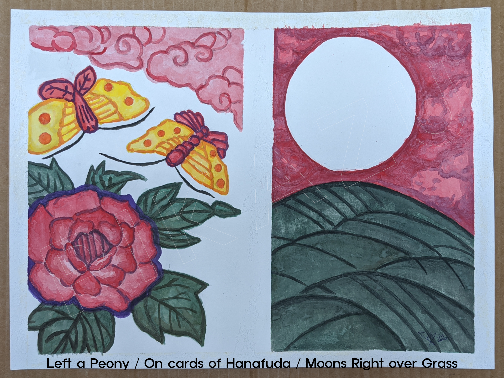

Left a Peony / On cards of
Hanafuda
/ Moons Right over Grass
, July 2020 Watercolor 14 in × 10 in (35.5 cm × 25.4 cm)
Graphs Test
(samples at at different rate) scaling factor:
fallback content, canvas not supported!
Transformation: s*(200/6) + 100.
Stop